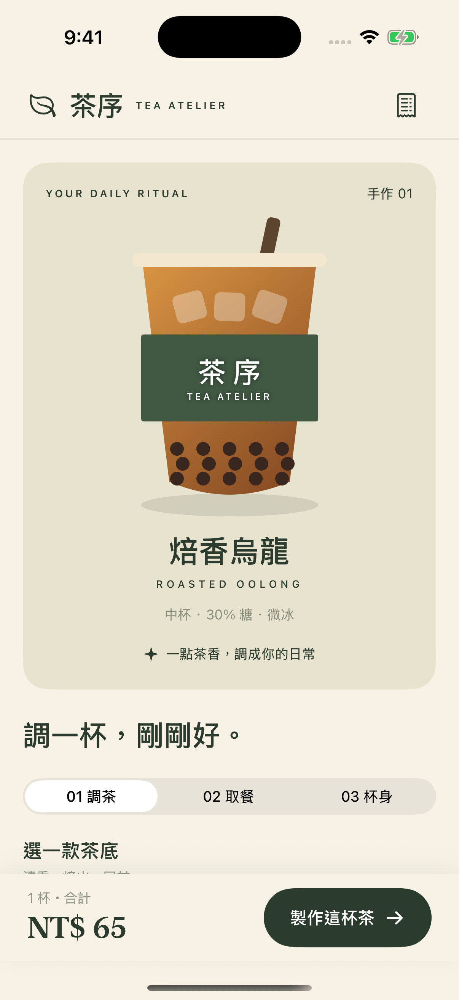
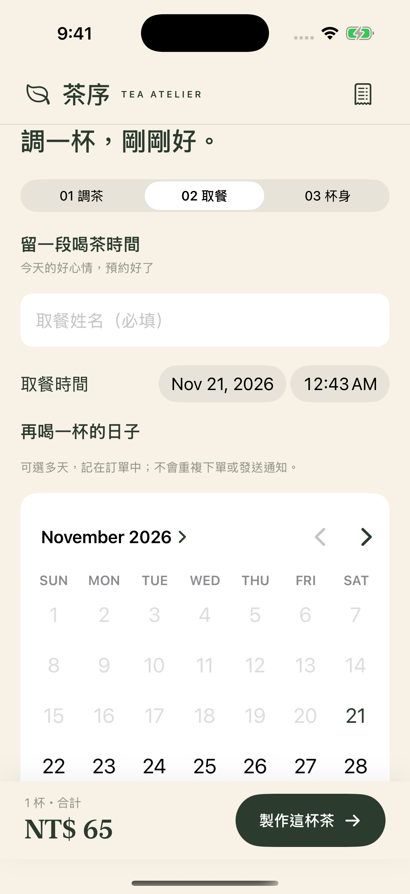
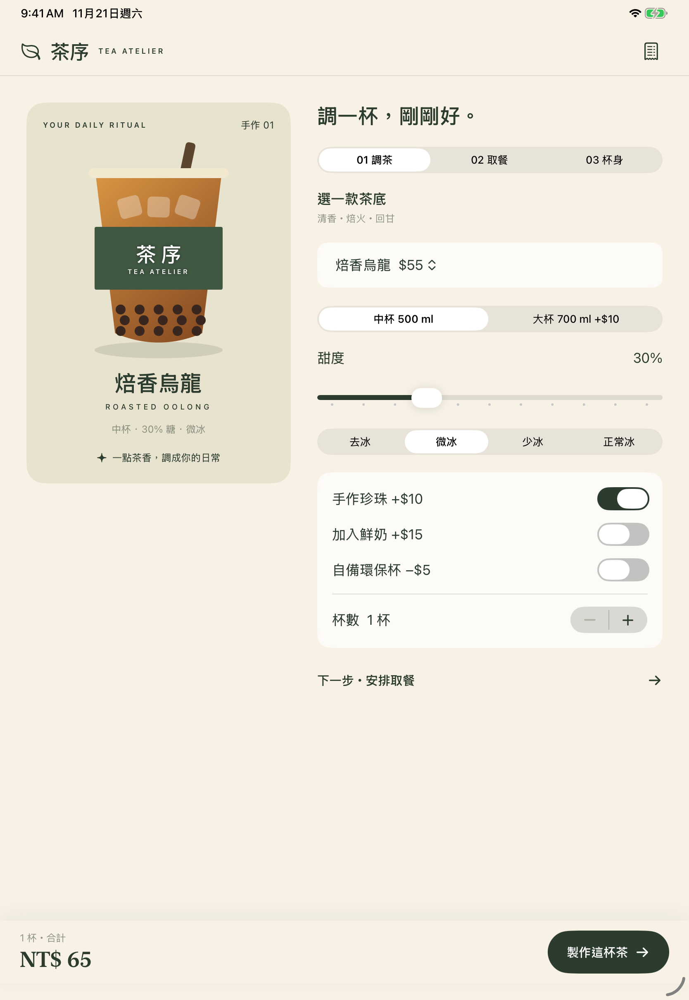

這次作業要結合各種輸入元件並顯示 alert。我選擇做一個客製飲料 App「茶序 Tea Atelier」，讓每個元件都有明確的用途：調整配方、安排取餐，最後設計自己的杯身。
畫面以奶油色與墨綠色為主，茶杯用 SwiftUI Shape 繪製。切換茶底會改變茶湯顏色，加入鮮奶會呈現奶茶色，開關珍珠也會同步反映在杯子裡。底部固定顯示杯數與總額，捲動表單時仍能確認價格。

第一步「調茶」使用 Picker 選茶底、杯型與冰量；Slider 控制甜度，Toggle 控制珍珠、鮮奶與自備杯，Stepper 調整杯數。
第二步「取餐」使用 TextField 輸入姓名、DatePicker 選取餐時間、TextEditor 填寫備註。MultiDatePicker 則用來收藏未來想喝茶的日子。這些日子只會記錄在訂單，不會偷偷增加訂單數量。
第三步「杯身」用 ColorPicker 選杯標顏色，PhotosPicker 選擇自己的照片。長按預覽杯身會出現 contextMenu，可以移除照片或回復經典配方。

配方保存在 `@State private var order = TeaOrder()`。控制項透過 `$order.sweetness`、`$order.pearls` 等 Binding 修改資料。預覽和總額讀取同一份 order，不必再手動同步各個 Label。
Slider(value: $order.sweetness, in: 0...100, step: 10)
Toggle("手作珍珠 +$10", isOn: $order.pearls)
Stepper("杯數 \(order.quantity) 杯", value: $order.quantity, in: 1...12)
價格放在模型的 computed property 中：
var unitPrice: Int {
tea.price + (large ? 10 : 0) + (pearls ? 10 : 0)
+ (milk ? 15 : 0) - (ownCup ? 5 : 0)
}
var total: Int { unitPrice * quantity }
這樣切換任何一個選項，價格都會從最新資料重新計算，也能獨立檢查各種組合。
點「製作這杯茶」時會先檢查取餐姓名。如果只有空白，會請使用者補上；取餐時間若已過期，也會阻止送出。通過檢查後，alert 顯示茶飲、數量與總額，使用者可以取消回去調整，或確認製作。
確認後會顯示完成訊息，並把 Receipt 編碼成 JSON，透過 AppStorage 存在本機。右上角的訂單紀錄可以看到最近 30 筆，重開 App 仍會保留。重設配方也有另一個確認 alert，避免誤觸。
iPhone 以垂直捲動方式顯示預覽和表單；iPad 寬畫面則把茶杯放左邊、輸入元件放右邊，調整時可以同時看到變化。

模型檢查涵蓋三種茶底、四個二元選項與 1～12 杯，共 576 種價格組合；另外驗證空白姓名、過期時間和 Receipt 的編碼／解碼。示範影片以 Debug 專用流程自動切換狀態，展示配方、取餐、杯身、alert 與儲存紀錄，不是手指點擊錄影。
這次最大的收穫是：輸入元件不是愈多就愈好，而是要讓每個元件解決一個使用者真的需要的選擇。當資料模型清楚，SwiftUI 的 binding 就能把表單、預覽和結果自然連在一起。
本作品是課堂模擬點餐，不會付款或送單。照片和顏色只用於當次杯身預覽，多選日期也不發送通知。茶杯與圖示都是程式繪製，介面圖示來自 SF Symbols。